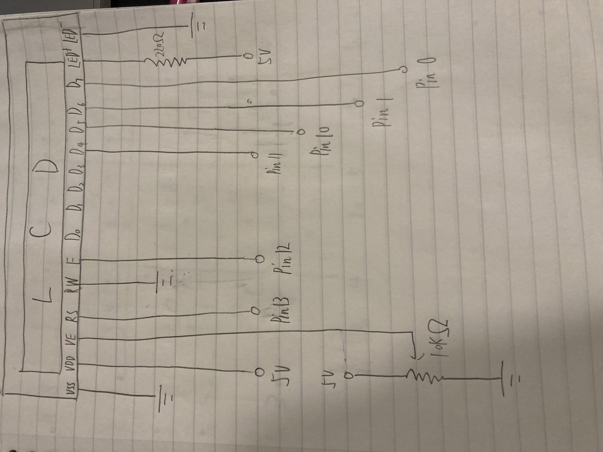
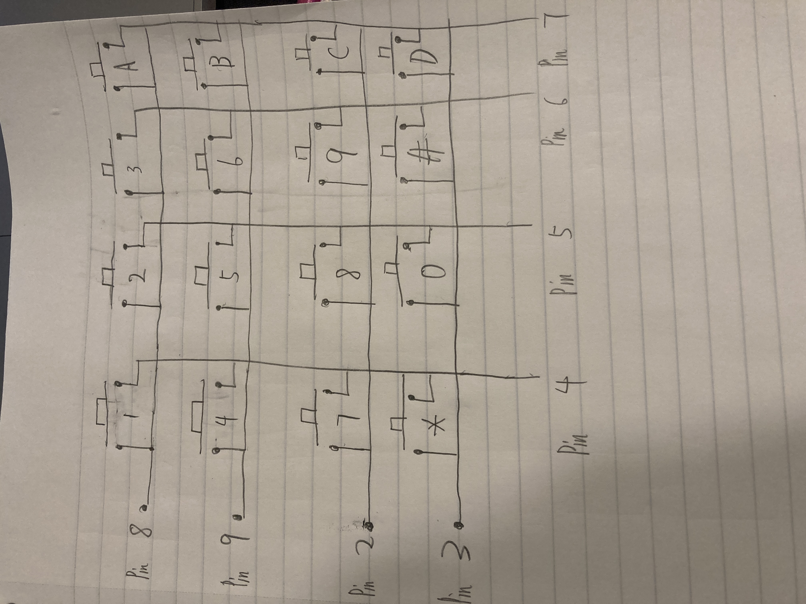
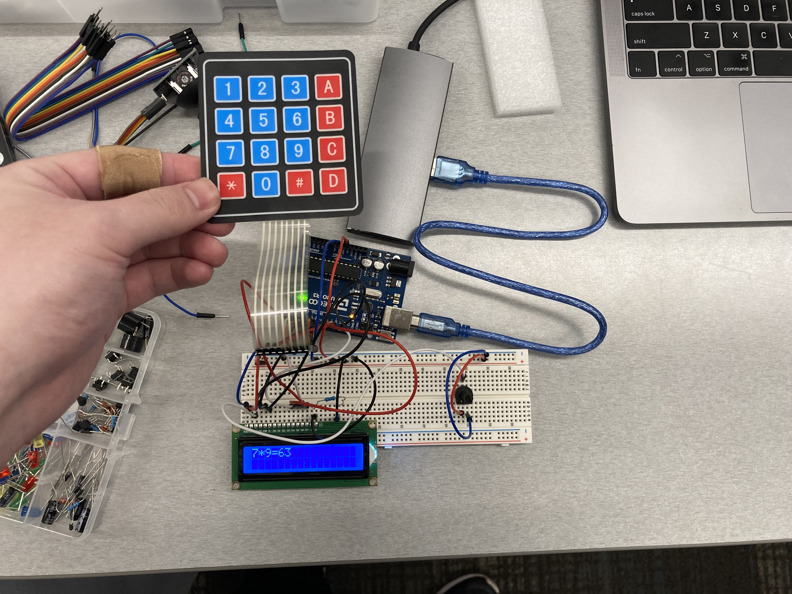

Assignment 4 - Library

Process:
Idea: I want Using the Keypad as input to control the LCD. Also use potentiometer to control the brightness of the LCD.
Based on the reference :
https://www.circuitbasics.com/how-to-set-up-an-lcd-display-on-an-arduino/
"A typical value is 220 Ohms, but other values will work too. Smaller resistors will make the backlight brighter."
So, I'm using 220Ω resistor for LCD
"The potentiometer is used to adjust the screen contrast. I typically use a 10K Ohm potentiometer, but other values will also work."
So, I'm using the 10k resistor with potentiometer.

(Output: LCD)

(Input: Keypad)

Code:
#include <Keypad.h> //include the Keypad library
#include <LiquidCrystal.h> //include the LiquidCrystal library
LiquidCrystal lcd(13, 12, 11, 10, 1, 0); //Using the LiquidCrystal library to set LCD connect to pin 13, 12, 11, 10, 1, 0
const byte ROWS = 4; //four rows
const byte COLS = 4; //four columns
char keys[ROWS][COLS] = { //set up the row and columns of keypad
{'1','2','3','A'}, // 1st row is '1','2','3','A'
{'4','5','6','B'}, // 2nd row is '4','5','6','B'
{'7','8','9','C'}, // 3rd row is '7','8','9','C'
{'*','0','#','D'} // 4st row is '*','0','#','D'
};
byte rowPins[ROWS] = {8, 9, 2, 3}; //connect to the row pinouts of the keypad
byte colPins[COLS] = {4, 5, 6, 7}; //connect to the column pinouts of the keypad
//Create an object of keypad
Keypad keypad = Keypad( makeKeymap(keys), rowPins, colPins, ROWS, COLS );
// the setup routine runs once when you press reset:
void setup(){
lcd.begin(16, 2); //The name of the object of the class LiquidCrystal. 16×2 translates o a display 16 characters per line in 2 such lines
}
void loop(){ //loop function
char key = keypad.getKey();// Read the key
// Print if key pressed
if (key){
if (key == 'A') { //if user press A
key = '='; // the key will change to =
lcd.print(key); //LCD print out the key value
}
else if (key == 'B') { //if user press B
key = ""; // the key will change to empty
lcd.clear(); // LCD will clear all of output
}
else { // else
lcd.print(key); // LCD just print out the key value
delay(500); //delay for 0.5s
}
}
}